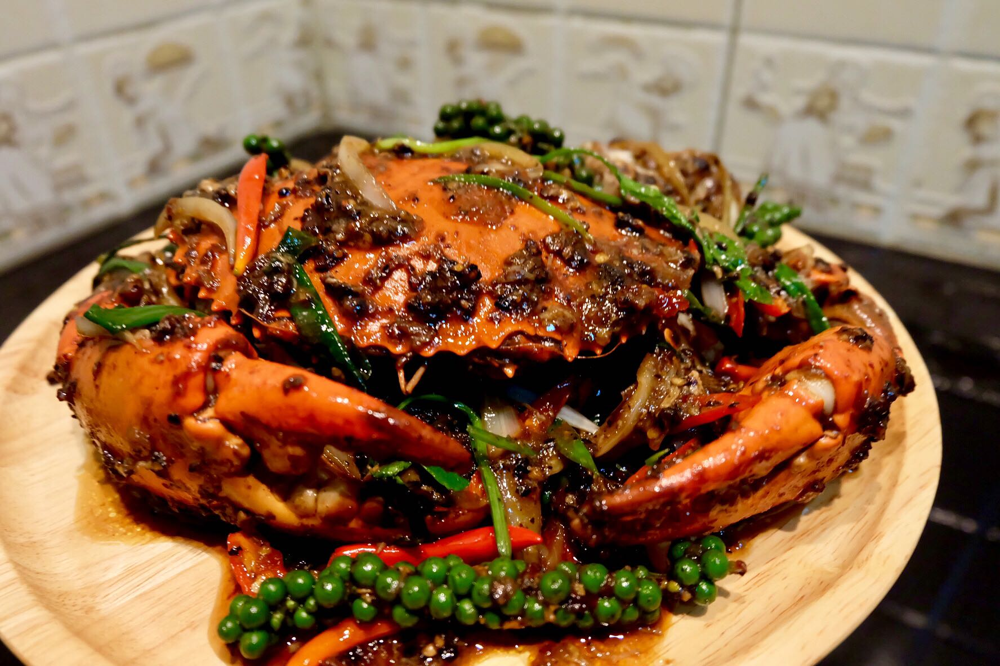

<!DOCTYPE html>
<html lang="en">
<head>
    <meta charset="UTF-8">
    <meta name="viewport" content="width=device-width, initial-scale=1.0">
    <title>จ๊ะเอ๊..ตัวเอง..</title>
    <link rel="icon" type="image/x-icon" href="C:\Users\saray\OneDrive\Desktop\งานโฮม\favicon.ico">
<style>
a:link, a:visited {
  background-color:#000000;
  color: white;
  padding: 15px 25px;
  text-decoration: none;
  display: inline-block;
}
a:hover, a:active {
  background-color: #424242;
}
</style>
</html>
        
<body background="C:\Users\saray\OneDrive\Desktop\งานโฮม\ere7.jpg">

        <p style="float:right"><button onclick="document.location='index4.html'">สถานที่อยากไปเที่ยว</button></p>
        <p style="float:right"><button onclick="document.location='index3.html'">รูปถ่ายที่ชอบ</button></p>
        <p style="float:right"><button onclick="document.location='index2.html'">อาหารที่ชอบ</button></p>
        <p style="float:right"><button onclick="document.location='index.html'">หน้าแรก</button></p>

<div style="background-color:black;color:white;padding:20px;">
        <br><h1><p align=center style="color:#ffffff;">อาหารที่ผมโคตรชอบ</h1></p></br> 
        <marquee style="color:#ffffff;">รู้ยัง มะนาว เปลี้ยวนะครับ </marquee>
</div> 

<p></p>

<div style="background-color:#ef6c00;color:white;padding:112px;">
        <h1><p align=center style="color:#ffffff;">ต้มยำกุ้ง</h1></p>
        <p align=center style="color:#ffffff;">ต้มยำกุ้ง เป็นอาหารไทยภาคกลางประเภทต้มยำ ซึ่งเป็นที่นิยมรับประทานไปทุกภาคในประเทศไทย เป็นอาหารที่รับประทานกับข้าว มีรสเปรี้ยวและเผ็ดเป็นหลักผสมเค็มและหวานเล็กน้อย แบ่งออกเป็น 2 ประเภท คือ ต้มยำน้ำใส และ ต้มยำน้ำข้น</p>
        <p align=center><a href="https://www.knorr.com/th/r/%E0%B8%95%E0%B9%89%E0%B8%A1%E0%B8%A2%E0%B8%B3%E0%B8%81%E0%B8%B8%E0%B9%89%E0%B8%87%E0%B8%99%E0%B9%89%E0%B8%B3%E0%B8%82%E0%B9%89%E0%B8%99.html/117756?gclid=Cj0KCQiAhomtBhDgARIsABcaYykM5Ahd6aREPT-U5wOrasG0kLKTb8Vr7X3BYdaqRh7seg6CQY2TAmUaAltCEALw_wcB&gclsrc=aw.ds" target="_blank">สูตรต้มยำกุ้งนํ้าข้น</a></p>
         
 </div>

<p></p>

<div style="background-color:#CA9CAC;color:white;padding:98px;">
         <h1><p align=center style="color:#ffffff;">ข้าวหน้าปลาไหล</h1></p>
         <p align=center style="color:#ffffff;">ข้าวหน้าปลาไหล คือข้าวสวยที่ท็อปปิ้งด้วยปลาไหลย่าง โดยจะนำปลาไหลมาเลาะก้างและเครื่องในออก หั่นให้เป็นชิ้นยาวเสียบไม้ย่าง ทาซอสโชยุรสหวานเค็ม จากนั้นเสิร์ฟบนข้าวสวยร้อนๆ ซอสรสชาติเข้มข้นทำให้ปลาไหลย่างเข้ากับข้าวได้เป็นอย่างดี</p>
         <p align=center><a href="https://www.pholfoodmafia.com/recipe/unadon-%E0%B8%82%E0%B9%89%E0%B8%B2%E0%B8%A7%E0%B8%AB%E0%B8%99%E0%B9%89%E0%B8%B2%E0%B8%9B%E0%B8%A5%E0%B8%B2%E0%B9%84%E0%B8%AB%E0%B8%A5/" target="_blank">สูตรข้าวหน้าปลาไหล</a></p>

 </div>

<p></p>

<div style="background-color:#F5EED8;color:white;padding:77px;">
        <h1><p align=center style="color:#000000;">สปาเก็ตตี้คาโบนาร่า</h1></p>
        <p align=center style="color:#000000;">ละอองควันจากพาสต้าร้อนๆ โชยขึ้นพร้อมกลิ่นหอมมันของครีม ชีส และเบคอนกลิ่นกระทะ ตัดด้วยกลิ่นของพริกไทยดำและพาร์สลี่ ความชุ่มช่ำของเส้นพาสต้าที่คลุกกับครีมซอสเข้มข้นมีสีออกเหลืองทอง นั่นคือ เอกลักษณ์ของ “สปาเก็ตตี้คาโบนาร่า” อาหารอิตาเลียนจานโปรด ที่ชวนให้อยากรับประทานในทุกครั้งที่นึกถึง</p>
        <p align=center><a href="https://dtc.ac.th/blogs/spaghetti-carbonara-recipe/" target="_blank">สูตรสปาเก็ตตี้คาโบนาร่า</a></p>
         
 </div>

<p></p>

<div style="background-color:#2e0b06;color:white;padding:98px;">
         <h1><p align=center style="color:#ffffff;">ปูผัดพริกไทยดำ</h1></p>
         <p align=center style="color:#ffffff;">อาหารไทยจานเด็ดอย่างหนึ่งคือปูผัดพริกไทยดำ เมนูนี้ผสมผสานรสชาติอันละเอียดอ่อนของปูเข้ากับกลิ่นหอมของพริกไทยดำบดสดๆ อย่างลงตัว เสริมด้วยสมุนไพรและเครื่องปรุงรสอันเป็นเอกลักษณ์ของไทย</p>
         <p align=center><a href="https://foodthaimenu.com/%E0%B8%9B%E0%B8%B9%E0%B8%9C%E0%B8%B1%E0%B8%94%E0%B8%9E%E0%B8%A3%E0%B8%B4%E0%B8%81%E0%B9%84%E0%B8%97%E0%B8%A2%E0%B8%94%E0%B8%B3/" target="_blank">สูตรปูผัดพริกไทยดำ</a></p>

 </div>

<p style="float:right"><button onclick="document.location='index3.html'">หน้าต่อไป</button></p>
<p style="float:right"><button onclick="document.location='index.html'">หน้าที่แล้ว</button></p>
</body>
</html>